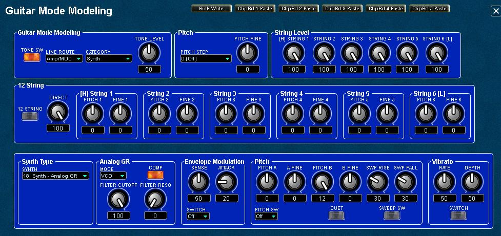
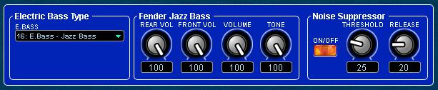
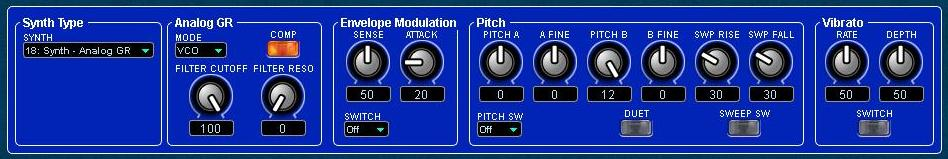

GR-55
FloorBoard Editor
Help
IndexModeling Sounds
The COSM Guitar Mode Modeling parameters panel is where you can enable and specify
the settings for the guitar signal generated by the GK pickup. The
lower row of controls changes depending on which CATEGORY is selected
in the Guitar Mode Modeling sub-module and can vary additionally according to the guitar, bass or synth type selected in the bottom panel.
Guitar Mode Modeling
There are four Guitar Mode Modeling categories to
choose from: Electric Guitar, Acoustic, Electric Bass, and Synth, each
with its own category parameters panel, and each with different
sub-panels for the different types of synths, guitars and
basses. One of the six different Synth sub-panels, this one for the
Analog GR synth, is shown in the screenshot below. Each of these
individualized sub-panels allows you to fine tune parameters for each
instrument to your individual taste, allowing for the creation of an
unlimited number of unique instrument sounds. You can enable or disable the COSM tone output using the TONE SW button. You can set the effects line routing from the LINE ROUTE field. You can set the volume of the tone using the TONE LEVEL knob. Pitch
You can alter the pitch of the entire COSM tone by using the Pitch controls, PITCH STEP for one semitone increments from -24 to +24 semitones, and PITCH FINE from -100 to +100 in 1/100 semitone increments.12 String Modeling
You can create a 12 string guitar effect by enabling the 12 STRING switch and setting the pitch for the supplementary string by using the PITCH and FINE knobs for each string, 1 through 6. Use the DIRECT knob to balance the level between the source string and the supplementary string to optimize the mix. The PITCH controls have a range of -24 to +24, in semitone increments. The FINE controls have a range or -100 to +100 in 1/100th semitone increments.
On
a conventional 12-string guitar, supplementary strings 1 and 2 are
tuned to the same pitch (SHIFT = 0) as the corresponding main string,
and supplementary strings 3–6 are tuned one octave higher (SHIFT = +12)
than the corresponding main string. Slightly raising each string’s FINE setting will produce a more realistic 12-string guitar tone. Restriction Regarding 12 String and Alternate Tunings
NOTE: 12 STRING cannot be used with any of the following settings (the parameters will not be shown).
- MODELING TONE parameters
- TONE CATEGORY = E.BASS (if set to GUITAR input) or E.GTR (if set to BASS input)
- PITCH SHIFT ≠ 0
- PITCH FINE ≠ 0
- MASTER parameters
- ALTERNATE TUNING “SWITCH” = ON
Editing COSM Model Parameters
The bottom sub-panel allows you to edit parameters within the selected Guitar Mode Modeling CATEGORY.
If
you think of the lowest sub-panel on the Guitar MODE Modeling panel as containing the parameters that make an instrument
unique from other instruments, and experiment a bit, you should do well. There are dozens of sub-panels though, one for each COSM model, so it is not practical to show them all here. Please refer to the owner's manual for detailed information. However, since you've come this far, below are a few examples to help get you started.
EXAMPLE: Electric Guitar Type 02: Stratocaster
This example uses the Guitar Mode Modeling > CATEGORY > E. Guitar. This selection opens the Electric Guitar Type
sub-panel where you can select the guitar type from the E. GUITAR field, as
seen in the following screenshot showing the Modern Stratocaster. You can select any other guitar type though,
which will display a different set of controls to simulate the sound and features of that
type of guitar. It works similar for other guitar types, only some have different
parameters to simulate their features.
Electric Guitar Type
In this example, the E. Guitar type selected is 02 Modern Stratocaster. However, you can select any other guitar from the following list if you need another
sound:- 01: CLA-ST 16 - ST This models a Fender Stratocaster, a guitar with three traditional single-coil pickups.
- 02: MOD-ST - This models a guitar with three EMG active single-coil pickups.
- 03: H&H-ST - This models a Stratocaster-type guitar with humbucking pickups.
- 04: TE - This models a Fender Telecaster, a guitar with two single-coil pickups often used in blues and country music.
- 05: LP 17 0 LP This models a Gibson Les Paul Standard, a guitar with two humbucking pickups often used in rock.
- 06:
P-90 0 This models a Gibson Les Paul Junior, a guitar with two
single-coil pickups affectionately referred to as “dog ear” or “soap
bar” pickups.
- 07: LIPS - This models a Danelectro 56-U3, a guitar with three pickups with a distinctive silver “lipstick-style” appearance.
- 08: RICK - This models a Rickenbacker 360, a semi-hollow body guitar with two unique single-coil pickups.
- 09: 335 - This models a Gibson ES-335 Dot, a well-known semi-acoustic guitar with two humbucking pickups.
- 10:
L4 - This models a Gibson L-4 CES, a acoustic-body guitar suitable for
jazz, equipped with two humbucking pickups and strung with flat-wound
strings.
NOTE: If you do select another guitar type,
then the following controls will probably be different than those
described in this example. Just as real guitars have different pickups
and controls, so do the COSM modeled guitars!Fender Modern Strat
- This sub-panel offers the famous Stratocaster five-way pickup switch (PU SLECT) and its VOLUME and TONE controls.
Noise Suppression
- ON/OFF - Enable or disable noise suppression.
- THRESHOLD
- Adjust this according to the level of the noise. Set this to a higher
value if the noise level is high, or to a lower value if the noise
level is low. Adjust this so that the decay of your guitar still sounds
natural. Range: 0 to 100.
- RELEASE
- Specifies the time from when the noise suppressor begins to operate
until the volume is completely attenuated. Range: 0 to 100.
EXAMPLE: Acoustic Type 11: Acoustic - STEEL
This example uses the Guitar Mode Modeling > CATEGORY > Acoustic. This selection opens the Acustic Guitar Type
sub-panel where you can select the acoustic guitar type from the ACOUSTIC TYPE field, as
seen in the following screenshot, showing 11: Acoustic - STEEL. You can select any other guitar type though,
which will display a different set of controls to simulate the sound and features of that
type of guitar. It works similar for other guitar types, only some models have different
parameters to simulate their features.
Acoustic Guitar Type
In this example, the Acoustic Guitar Type selected is 11 STEEL. However, you can select any other guitar from the following list if you need another
sound:- 11: STEEL - This models a steel-string guitar.
- 12: NYLON - This models a nylon-string guitar.
- 13: SITAR - This models a Coral electric sitar. The sitar’s distinctive buzz and tonal change are modeled.
- 14: BANJO - This models a conventional five-string banjo.
- 15: RESO - This models a Dobro-type resonator guitar.
NOTE: If you do select another guitar type,
then the following controls will probably be different than those
described in this example. Just as real guitars have different pickups
and controls, so do the COSM modeled guitars!
Acoustic Steel
- PU SELECT (BODY TYPE) - Specifies the acoustic guitar type.
- MA28 - The sound of a Martin D-28. Older model known for its exquisitely balanced sound.
- TRP-0 - The sound of a Martin 000-28. This model features a full low-end resonance and crisp, distinct contour.
- GB45 - The sound of a Gibson J-45. This vintage model features a unique, seasoned tone with good response.
- GB SML - The sound of a Gibson B-25. Featuring a compact body, this vintage model is often used in blues.
- GLD40 - The sound of a Guild D-40. This model features warm resonance from the body along with a delicate string resonance.
- BODY - Adjusts the body resonation. Raising the value produces more of a sense of the guitar body in the sound. Lower the value in conditions where feedback is prone to occur. Range: 0 to 100.
- TONE - Adjusts the tone of the body. The standard value is 0; raising the value boosts the high range. Range: -50 to +50.
Noise Suppression
- ON/OFF - Enable or disable noise suppression.
- THRESHOLD
- Adjust this according to the level of the noise. Set this to a higher
value if the noise level is high, or to a lower value if the noise
level is low. Adjust this so that the decay of your guitar still sounds
natural. Range: 0 to 100.
- RELEASE
- Specifies the time from when the noise suppressor begins to operate
until the volume is completely attenuated. Range: 0 to 100.
EXAMPLE: Electric Bass Type 16: E.Bass - Jazz Bass
This example uses the Guitar Mode Modeling > CATEGORY > Electric Bass. This selection opens the Electric Bass Type
sub-panel where you can select the bass guitar type from the E. BASS field, as
seen in the following screenshot showing the Jazz Bass. You can select any other bass guitar type though,
which will display a different set of controls to simulate the sound and features of that
type of bass guitar. It works similar for other bass guitar types, only some have different
parameters to simulate their features.

Electric Bass Type
In this example, the E. BASS type selected is 16 E. Bass - Jazz Bass. However, you can select any other guitar from the following list if you need another
sound:
- 01: VINT JB This models a Fender Jazz Bass made in the 1960s.
- 02: JB This models a Fender Jazz Bass.
- 03: VINT PB This models a Fender Precision Bass made in the early 1960s.
- 04: PB This models a Fender Precision Bass.
- 05: M-MAN This models a Music Man StingRay Bass made in the 1970s.
- 06: RICK This models a Rickenbacker 4001.
- 07: T-BIRD This models a Gibson Thunderbird.
- 08: ACTIVE This models a typical bass equipped with active pickups.
- 09: VIOLIN This models a Höfner violin bass.
NOTE: If you do select another guitar type,
then the following controls will probably be different than those
described in this example. Just as real guitars have different pickups
and controls, so do the COSM modeled guitars!
Fender Jazz Bass
- REAR VOL - Sets the volume of the rear pickup. Range: 0 to 100.
- FRONT VOL - Sets the volume of the front pickup. Range: 0 to 100.
- VOLUME - Sets the overall bass volume level. With a setting of 0, there will be no sound. Range: 0 to 100.
- TONE - Adjusts the tone. Range: 0 to 100.
Noise Suppression
- ON/OFF - Enable or disable noise suppression.
- THRESHOLD
- Adjust this according to the level of the noise. Set this to a higher
value if the noise level is high, or to a lower value if the noise
level is low. Adjust this so that the decay of your guitar still sounds
natural. Range: 0 to 100.
- RELEASE
- Specifies the time from when the noise suppressor begins to operate
until the volume is completely attenuated. Range: 0 to 100.
EXAMPLE: Synth Type > 18: Synth - Analog GR
This example uses the Guitar Mode Modeling > CATEGORY > Synth. This selection opens the Synth Type
sub-panel where you can select the synth type from the SYNTH field, as
seen in the following screenshot. You can select other synth type though,
which display a different set of controls to simulate operation of that
type of synth. It works similar for other synth types, only some with different
parameters to simulate their features.
Synth Type - SYNTH
You can select from six different synthesizer types, as follows: - 18:
ANALOG GR 10: ANALOG GR - This is the sound of a classic analog
polyphonic guitar (bass) synthesizer. It provides hexa-distortion,
with a hexa-VCO and VCF (variable frequency filter) that generates
independent pitch-shiftable sawtooth waves for the six strings,
letting you enjoy analog synthesizer sounds that reflect the
nuances of your guitar or bass performance. To change the
pitch, use “PITCH A/B” (p. 36).
- 19: WAVE SYNTH 11: WAVE SYNTH
This algorithm directly processes the string signal from the GK pickup
to produce the synthesizer sound. It allows a natural performing
feel.
- 20: FILTER BASS 12: FILTER BASS This instrument is similar to a bass synth with a filter applied.
- 21: CRYSTAL 13: CRYSTAL This is an instrument with a metallic resonance.
- 22:
ORGAN 14: ORGAN This is a sustained-tone instrument suitable for solo
parts or slow songs. As on an organ, you can adjust the
volume level balance of three parameters (FEET 16, 8, 4) to create
the desired tone.
- 23: BRASS 15: BRASS This instrument produces a clear brass type sound good for leads.

With the Analog GR synth type selected, four sub-sections appear on the sub-panel labeled Analog GR, Envelope Modulation, Pitch, and Vibrato.
Each of these sections has knobs and switches to set its parameters.
Below is a list of the controls and their functions by sub-sections.
Analog GR
- MODE - VCO, DIST, and VCO+DIST (both). Specifies whether to sound the hexa-VCO (sawtooth wave), the hexa-DISTortion (square wave), or both.
- COMP - ON/OFF - If this is “ON,” the decay time of the hexa-VCO will be extended. If ENV MOD SW is “ON,” the decay time of the VCF (variable frequency filter) will also be extended.
- NOTE: The decay time of the hexa-distortion will not be extended.
- FILTER
CUTOFF - Adjusts the VCF cutoff frequency, specifying the brightness of
the sound. Higher settings will make the sound brighter. Range: 0 to 100.
- FILTER
RESO(nance) - Adjusts the VCF resonance (unique characteristics).
Higher settings will boost the sound in the region of the cutoff
frequency, producing a sound with more distinctive characteristics.
Envelope Modulation
- SWITCH - ON/OFF/INV:
- ON - Each time you pluck the string, the VCF cutoff frequency will move from high toward low, producing a “wah” effect.
- INV
- Each time you pluck the string, the VCF cutoff frequency will move
from low toward high, producing an “oo-ahh” that is the opposite of the
“wah” effect.
- OFF - Disables Envelope Modulation.
- NOTE: Extremely high cutoff frequency settings will make this effect difficult to discern.
- SENSE
- This knob adjusts the input sensitivity of the envelope modulation.
Higher settings of this value will increase the range of envelope
modulation that occurs when you pluck a string
softly. Range: 0 to 100. - NOTE: Listen
to how the sound is affected while you adjust this parameter. Start
with the setting at about “0,” and play while you gradually raise the
value. Setting ENV MOD ATTACK to “0” will make it easier to hear the
change.
- ATTACK
- Adjusts the attack time of the envelope modulation that occurs when
you play a string. Higher values produce a slower attack. Range: 0 to
100.
Pitch
- PITCH SW - OFF/A/B: Switches the pitch shift setting of the hexa-VCO that responds to the pitch of the string vibrations.
- NOTE: Pitch
shift applies only to the hexa-VCO; it does not apply to
hexa-distortion. If you want to use the pitch shift function, set MODE to “VCO” or “V+D.” See Analog GR above for MODE information.
- OFF - The pitch of the original sound will be unmodified.
- A - The pitch shift specified by PITCH A and PITCH A FINE will be applied.
- B - The pitch shift specified by PITCH B and PITCH B FINE will be applied.
- PITCH A/B - Adjusts the amount of pitch shift. Range: -12 to +12
- NOTE: This is effective when PITCH SW is set to anything other than “OFF.”
- NOTE: The final amount of pitch shift is the sum of PITCH and PITCH FINE.
- Specifies
the amount of pitch shift for PITCH A/B relative to the original pitch,
in semitones. A setting of “-12” is one octave down, and a setting of
“+12” is one octave up.
- FINE A/B - Adjusts the amount of pitch shift. Range: -50 to +50.
- NOTE: This is effective when PITCH SW is other than “OFF.”
- NOTE: The final amount of pitch shift is the sum of PITCH and PITCH FINE.
- Applies
a fine adjustment to the PITCH A/B pitch. A setting of “-50” is half a
semitone lower, and “+50” is half a semitone higher. This fine setting
allows DUET to be used effectively.
- DUET OFF, ON/OFF
- ON - Adds a sawtooth wave at the same pitch as the original sound to the hexa-VCO, making the sound richer.
NOTE: By
setting the hexa-VCO’s pitch shift to a PITCH setting such as +/-12 (an
octave up/down), +/- 7 (a perfect fifth), or +/-5 (a perfect fourth),
you can create thick, synthesizer-like sounds.
By setting PITCH FINE to about “+/-5” to slightly skew - OFF - Disables DUET mode.
- SWEEP SW - OFF/ON
- Turns the Sweep function on/off.
NOTE: Normally, you’ll use Control Assign to control PITCH SW, and use the control to operate PITCH SW.
The Sweep function is effective when you operate PITCH SW to change the pitch shift amount for the hexa-VCO.
It does not operate on changes that occur in the input pitch while the pitch shift amount is unchanged.
SWEEP RISE and SWEEP FALL have no effect if SWEEP SW is “OFF.”
- SWEEP RISE 0–100 Adjusts the time over which movement to a higher pitch will occur.
- If this is “0,” the change will occur instantly; higher values produce slower change. Range: 0 to 100
- SWEEP FALL 0–100 Adjusts the time over which movement to a lower pitch will occur.
- If this is “0,” the change will occur instantly; higher values produce slower change. Range: 0 to 100
Vibrato
The VIBRATO settings allows you to apply electronic vibrato to the hexa-VCO.
- SWITCH - OFF/ON
- Turns the vibrato effect on/off.
- NOTE:
If you make Control Assign settings to control VIBRATO SWITCH, you’ll
be able to add powerful vibrato by turning VIBRATO SW “ON” when
desired during your performance.
- NOTE: You cannot apply vibrato to the hexa-DISTortion. See Analog GR above for MODE information.
- VIBRATO RATE - Specifies the vibrato rate. Range: 0 to 100
- Higher values produce faster vibrato.
- VIBRATO DEPTH - Specifies the vibrato depth. Range: 0 to 100
- With a setting of “0” there will be no vibrato. Higher values produce deeper vibrato.
Bulk Write the Current Setting to a Range of Patches
You can use the editor's Bulk Patch Modifier feature to write the
current setting as seen on the open panel to a selectable
range of patches or to all patches if you wish to use the settings globally.
WARNING!!: Existing Patch data will be overwritten.
- Click the Bulk Write button to open the Bulk Patch Modifier.
- Select the starting and the finishing user patch numbers.
- Clcik Start to save the current settings to the selected patches, or click Cancel if you decide otherwise.